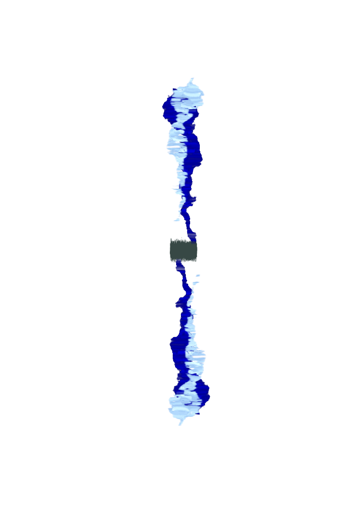

Terran Empire

Rewrite the Fate of the Galaxy
Game of Worlds is a modern revival of the 2012 original—rebuilt with faster lobbies, AI opponents, and refreshed art direction for decisive galactic conquest.
Pick your pace: Quick (fast turns) or Epic (one turn a day). Command your empire, research bold tech, and outmaneuver rivals—whether you binge a session in 20 minutes or trade daily turns with a friend.
Play Free NowFresh Updates
We’re polishing the live build weekly. Here’s what just landed:
-
Combat Reports
Battles now ship with sector highlights, modal summaries, and sound cues so you never miss a clash.
-
Standing Orders
Auto-rebuild economies and keep scouts online—Epic mode enables these by default for daily-turn pacing.
-
10s Launch Countdown
Start locks the lobby with a visible countdown; if anyone leaves, the launch is cancelled cleanly.
Strategise, Expand, Dominate
Every match is a four-dimensional chess match where production, research, diplomacy, and decisive strikes determine the victor.
-
Distinct Factions
Master twelve asymmetric races, each with unique perks, unlock criteria, and late-game tech spikes.
-
Meaningful Combat
Outfit fleets for orbital sieges, raid supply lines, and counter enemy doctrines with targeted tech picks.
-
Persistent Progression
Earn achievements, unlock premium factions, and build your legend with every campaign you finish.
-
Quick or Epic
Sprint through fast turns or play one decisive turn a day with friends over weeks. Epic mode boosts income so daily moves stay meaningful.
-
AI Allies & Foes
Fill empty seats instantly, spar against AI-only sandboxes, or blend humans with bots for flexible, low-friction matches.
Discover the Races
Choose your path to galactic domination with one of twelve factions—each offering distinct advantages, tech paths, and playstyles.
Silicon Collective
Zephyr Swarm
Crystalline Entity
Void Walkers
Mechanicus
Bioform Collective
Star Nomads
The Ancients
Quantum Entities
Titan Lords
Shadow Realm